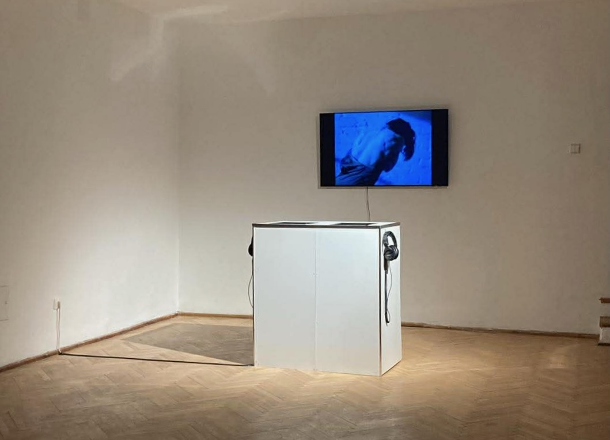
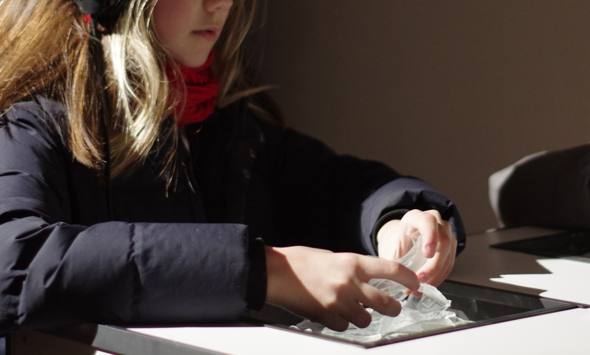

The installation is inspired by V. Zobielaitė’s dance film Ephemeros and invites to a sensory encounter with the film’s character.
The starch and glass placed in front of the screen-the same materials that appear in the film-can be touched, explored, and experienced up close. Through headphones, visitors hear each object’s sonic interpretation: sounds shaped not only by touch and movement but also by the participant’s own engagement.
By interacting with these materials, which were previously only observed on screen, the film transforms into a living experience: it is no longer just seen, but felt through touch, hearing, and sight, inviting the viewer to participate and become part of the work.
.
Instaliacija sukurta pagal V. Zobielaitės šokio filmą Ephemeros ir kviečia į jutiminį susitikimą su filmo personažu.
Dėžutėse priešas ekraną - stiklas ir krakmolas, medžiagos, veikiančios ir šokio filme. Juos galima paliesti, apžiūrėti, patyrinėti. Per ausines girdimos kiekvieno objekto soninės interpretacijos - garsai, kintantys ir nuo dalyvio įsitraukimo.
Liečiant šiuos objektus, kurie filme buvo tik stebimi, instaliacija tampa gyva patirtimi: filmas nebėra tik regimas, jis atsiveria per lytėjimą, klausą ir regą, kviesdamas dalyvauti ir tapti jos dalimi.



